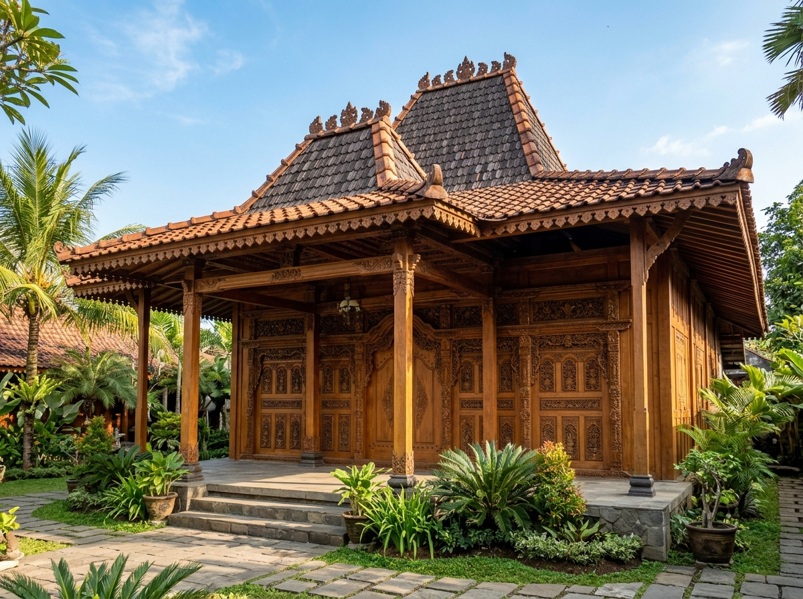
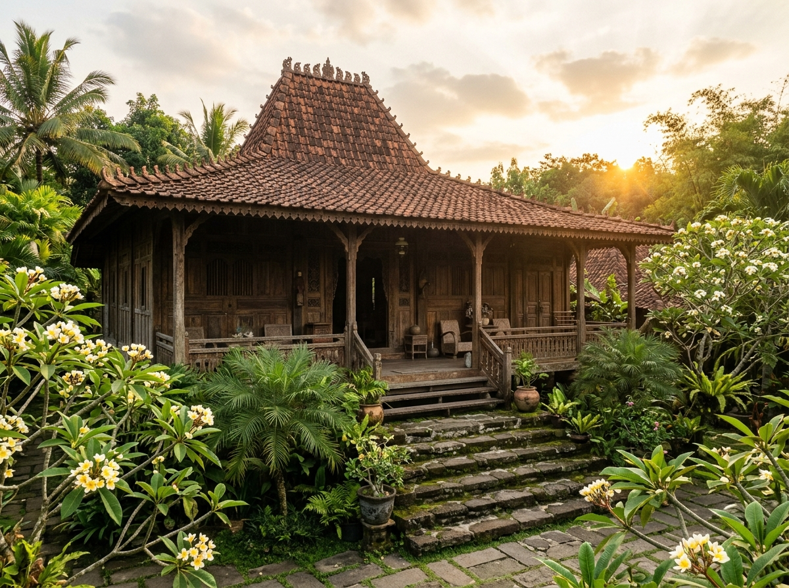
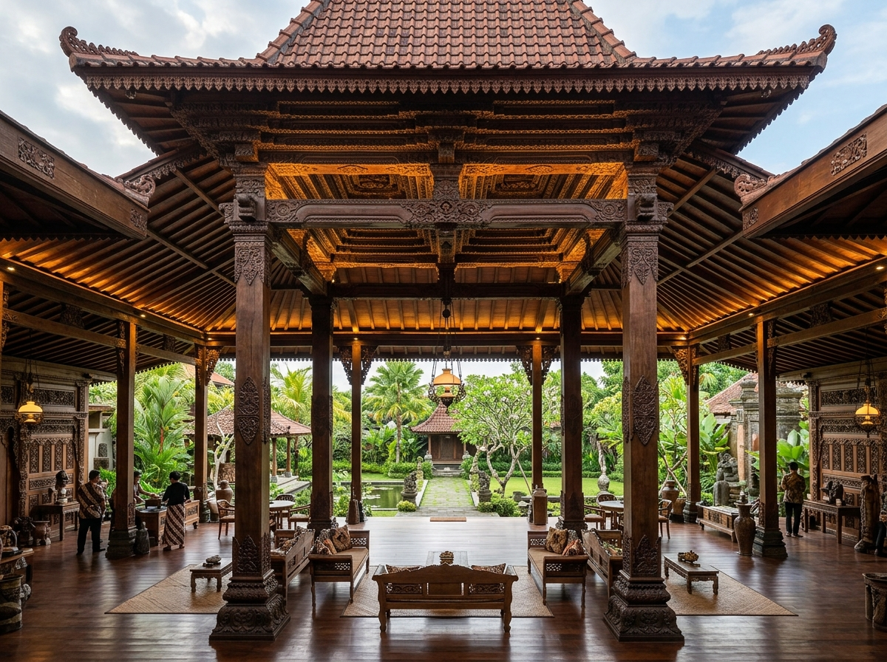
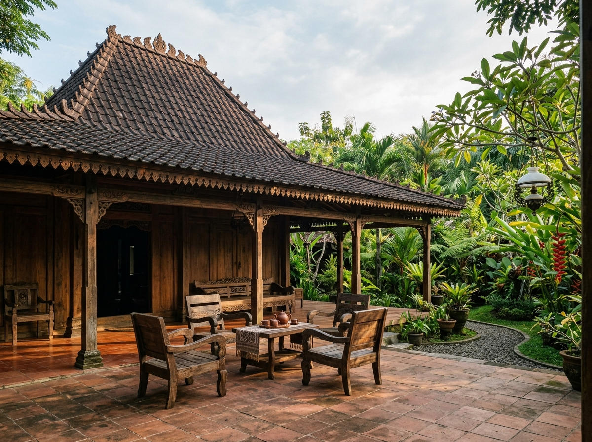
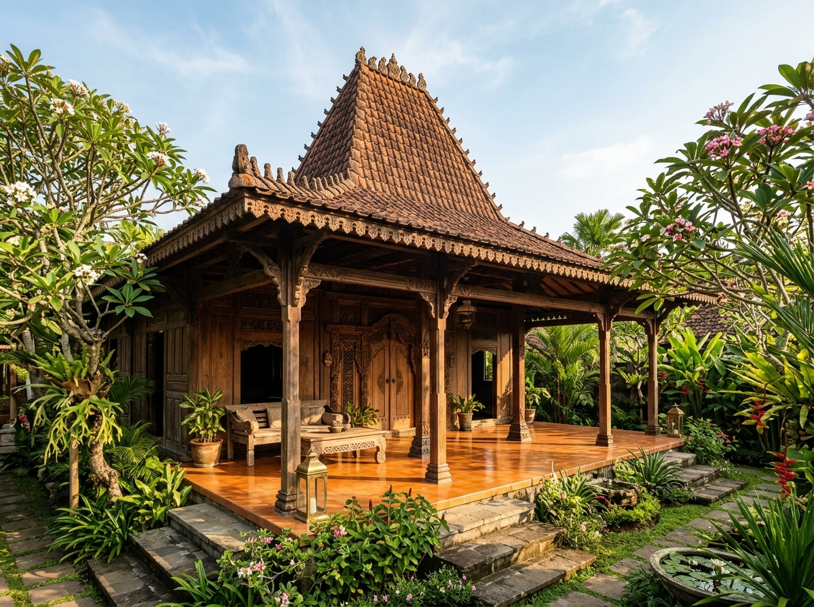
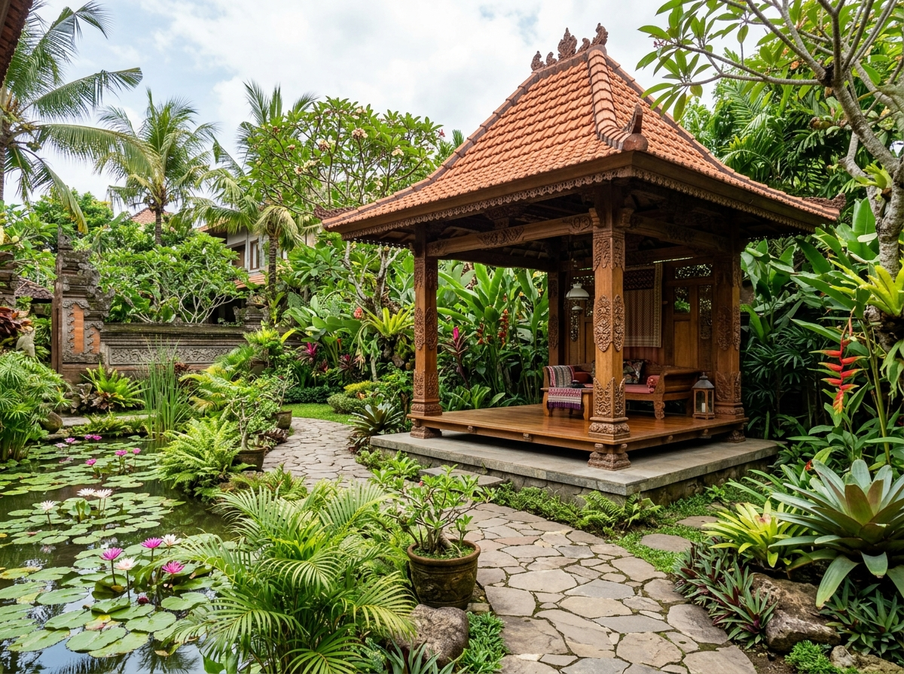

Daftar Pilihan Produk Kayu Jati
Klik tombol WhatsApp pada produk untuk mendapatkan penawaran & kustomisasi.

Joglo Jati Ukir Kudus
- Dimensi: 10 m x 12 m (Tinggi 6.2 m)
- Soko Guru: 20 cm x 20 cm (Solid)
- Material: Kayu Jati TPK Perhutani Kering
Dirancang dengan pakem Kudusan klasik. Tumpang sari bertingkat 7 dengan ukiran motif flora lung-lungan dan gebyok ukir tiga dimensi halus.

Joglo Lawas Trajumas Antik
- Dimensi: 9 m x 11 m (Tinggi 5.8 m)
- Soko Guru: 18 cm x 18 cm
- Material: Jati Lawas Asli (Usia 80+ Tahun)
Bangunan bersejarah peninggalan era kolonial di pedalaman Jawa Tengah. Memiliki patina gelap alami yang tidak bisa ditiru kayu baru.

Pendopo Agung Joglo Jati
- Dimensi: 14 m x 16 m (Tinggi 7.5 m)
- Soko Guru: 25 cm x 25 cm (Pilihan Utama)
- Material: Kayu Jati Super Solid Grade A
Desain panggung megah tanpa dinding sekat untuk fungsi balai pertemuan, aula serbaguna, restoran, lobi hotel, atau tempat resepsi bergengsi.

Rumah Limasan Jawa Modern
- Dimensi: 8 m x 14 m (Tinggi 5.0 m)
- Soko Guru: 16 cm x 16 cm
- Material: Kayu Jati Tua Reklamasi
Bentuk atap memanjang yang sangat cocok untuk denah rumah tinggal vila 2 atau 3 kamar tidur. Sejuk alami dengan sirkulasi udara optimal.

Joglo Sinom Heritage Mataram
- Dimensi: 11 m x 13 m (Tinggi 6.5 m)
- Soko Guru: 22 cm x 22 cm
- Material: Jati Lawasan Asli Mataraman
Tipe Joglo Sinom dengan 36 saka tiang pendukung dan ornamen ukir klasik peninggalan keraton. Memancarkan aura ketenangan dan kearifan Jawa.

Gazebo Joglo Ukir Taman
- Dimensi: 3.5 m x 3.5 m (Tinggi 3.8 m)
- Soko Guru: 15 cm x 15 cm
- Material: Kayu Jati Finishing Natural Doff
Paviliun taman santai dengan atap joglo bertingkat dan lantai panggung kayu jati. Sangat serasi untuk taman samping rumah, kafe, atau tepi kolam.
Butuh Ukuran Khusus atau Desain Kustom?
Kami siap mewujudkan denah dan ukuran joglo yang disesuaikan dengan kontur tanah, kebutuhan ruangan, maupun kombinasi kaca tempered modern.
Dapatkan Spesifikasi Rinci & Estimasi Biaya
Konsultasikan kebutuhan Anda langsung dengan arsitek kayu jati kami. Kami kirimkan portofolio foto real dan video langsung dari workshop.
Hubungi via WhatsApp